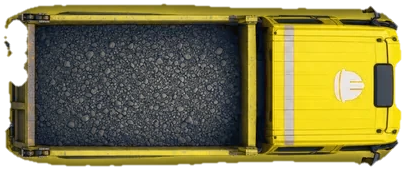

Scheduling + dispatch
One dispatch board for your trucks, your brokers and your carriers.
Most owners run part of their work through trucks they don't own. CrewFinding puts all of it on one dispatch board: your own drivers, the brokers you work with, and the third-party carriers you hand loads to. Create the job, pick who carries it, build the route and send it. The moment they receive it and accept, you see it, with the time.
- 1BookCreate the job
- 2AssignFleet, broker or 3PL
- 3ReceivedAccepted, with the time
- 4TrackedBOL signed, GPS live
- 5Final mileOffload signed SCHEDULING AND DISPATCHSHIPMENT TRACKING
DISPATCH BOARD · MONDAYLIVE
TO ASSIGN
Load 4471Montreal to Toronto
Load 4472Laval to Ottawa
Load 4473Dorval to Quebec City
WHO CARRIES IT
YOUR OWN FLEETYour driver gets the day and the route
SENT6:45RECEIVED6:47ACCEPTED6:52Route loaded on their phone
B
YOUR BROKERA load handed to a broker you work with
SENT6:46RECEIVED7:03ACCEPTED7:10Route loaded on their phone

3PL CARRIERA third-party carrier receives it in the app
SENT6:46RECEIVED7:12ACCEPTED7:30Route loaded on their phone
0 OF 3 RECEIVED
Built for service businesses that run their own trucks and third-party logistics side by side.